Ingeniería en
Inteligencia Artificial
y Visión por Computadora
Equipo multidisciplinario de ingenieros en mecatrónica y sistemas computacionales, especializados en el desarrollo de soluciones tecnológicas a medida. Combinamos experiencia en visión artificial, inteligencia artificial embebida, robótica y automatización para resolver problemas reales en industria, seguridad y campo. Diseñamos, prototipamos e implementamos desde la etapa de concepto hasta la entrega funcional.
Proyectos Desarrollados
07 sistemasSistema de visión artificial integrado a una plataforma UAV capaz de detectar y seguir objetivos móviles en tiempo real. Todo el procesamiento ocurre a bordo mediante cómputo embebido con aceleración hardware dedicada a inferencia neuronal.
- Redes neuronales convolucionales profundas tipo single-stage detector optimizadas para inferencia de baja latencia en hardware embebido con aceleración neuronal dedicada
- Tracking multi-objeto con filtros probabilísticos de Kalman y métricas de reidentificación entre frames (ReID) para persistencia de objetivo ante oclusiones
- Estimación de pose y distancia relativa mediante análisis geométrico proyectivo fusionado con datos inerciales (IMU) del vehículo
- Visual servoing: lazo cerrado PID con retroalimentación visual directa para control de orientación de gimbal en dos ejes
- Pipeline adaptativo con corrección de exposición dinámica, estabilización digital y compensación de vibración mecánica en vuelo
- Enlace bidireccional de baja latencia con estación base para telemetría, supervisión en tiempo real y override manual
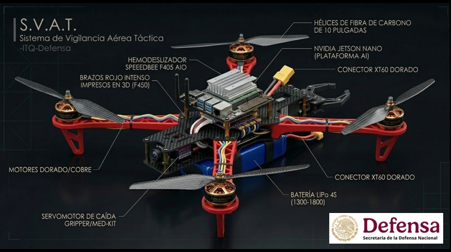
Plataforma de inspección autónoma o semiautónoma que navega el interior de tuberías aplicando visión artificial para detección temprana de fallas estructurales, con reporte automático y localización geométrica del hallazgo.
- CNNs entrenadas con datasets específicos de defectología: corrosión, fisuras longitudinales y transversales, incrustaciones, deformaciones y obstrucciones parciales
- Segmentación semántica por píxel para delimitar la extensión morfológica de cada anomalía y cuantificar el área afectada con precisión
- Iluminación activa estructurada para resaltar irregularidades superficiales en condiciones de baja o nula visibilidad ambiental
- Odometría visual (Visual Odometry) para estimación acumulada de posición dentro de la tubería sin dependencia de señal GPS
- Reconstrucción 3D parcial del interior mediante fotogrametría y depth estimation para cuantificación volumétrica del daño
- Reporte automático con clasificación de severidad, coordenadas estimadas del hallazgo y registro fotográfico anotado por clase
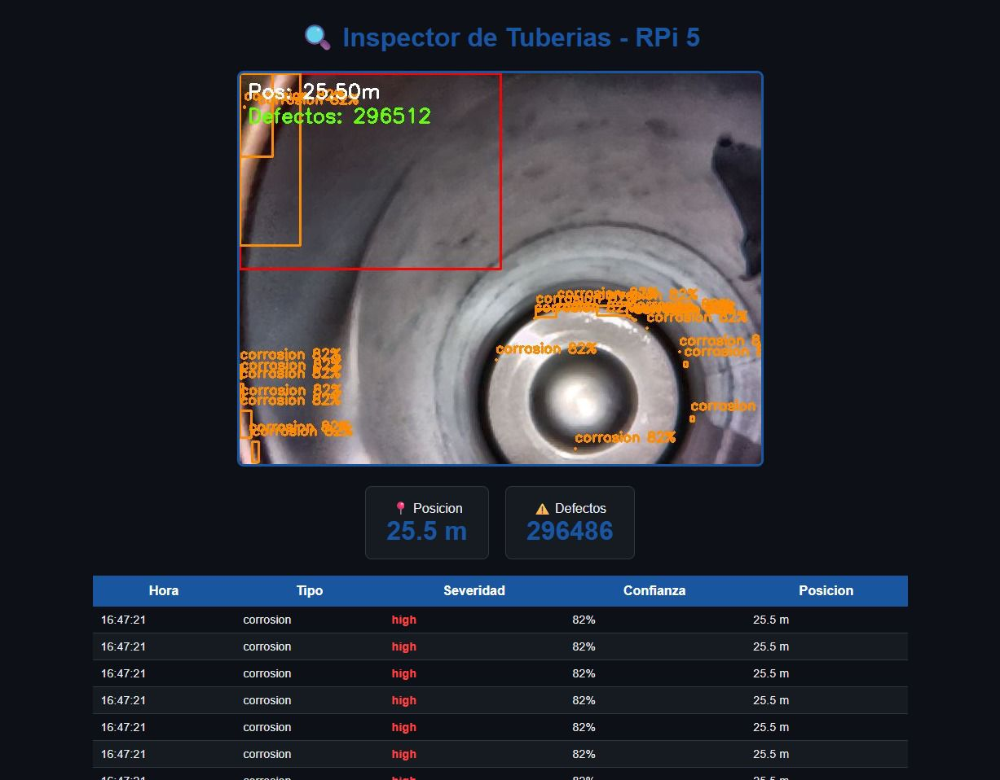
Solución en tiempo real para verificar el uso correcto de casco, chaleco de seguridad y guantes en zonas de trabajo, integrable con infraestructura de cámaras existente. Alertas automáticas y registro auditado de cumplimiento normativo.
- Detección simultánea multi-persona y multi-clase de EPP con soporte para oclusión parcial, variaciones de iluminación y entornos dinámicos
- Pose estimation para contextualizar la posición de cada elemento de protección respecto a la anatomía del trabajador, reduciendo drásticamente falsos positivos
- Clasificación por región de interés (ROI): presencia/ausencia y uso correcto vs. incorrecto por cada tipo de EPP de forma independiente
- Procesamiento distribuido sobre múltiples flujos de cámaras con gestión de colas y priorización dinámica de alertas por nivel de riesgo
- Alertas en tiempo real: notificación visual, señal auditiva y registro de evento con timestamp e imagen recortada como evidencia auditada
- Dashboard web de cumplimiento con estadísticas por turno y zona, sin almacenamiento de datos biométricos personales

Sistema de visión artificial para inspección automatizada de piezas en línea de producción. Detecta defectos, anomalías superficiales y desviaciones dimensionales con alta precisión, velocidad y trazabilidad completa por pieza.
- Detección de anomalías no supervisada entrenada sobre muestras conformes (one-class learning), eliminando la necesidad de grandes datasets de defectos etiquetados
- Segmentación para localización y cuantificación del área afectada: porosidades, rebabas, grietas, deformaciones y marcas superficiales por clase
- Calibración métrica del sistema óptico para medición dimensional en imagen con precisión sub-milimétrica y control de incertidumbre
- Iluminación multiespectral y franja de luz estructurada para revelar defectos invisibles bajo condiciones de iluminación convencional
- Inspección on-the-fly sincronizada con banda transportadora mediante trigger óptico sin interrupción de flujo productivo
- Módulo SPC integrado: gráficos de control estadístico, índices Cp/Cpk, trazabilidad por lote y reportes de calidad exportables
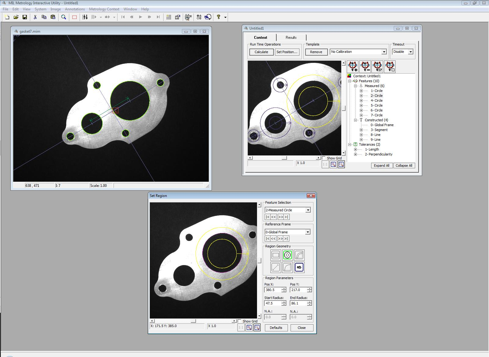
Sistema de detección y localización espacial de fuentes sonoras mediante arreglos de micrófonos distribuidos y procesamiento inteligente de señales. Estima en tiempo real la posición 2D/3D de un evento acústico sin requerir visibilidad directa del objetivo.
- Triangulación por diferencias de tiempo de arribo (TDOA) entre nodos del arreglo distribuido de sensores, con sincronización precisa de canales
- Estimación de dirección de arribo (DOA) mediante beamforming adaptativo y algoritmos de alta resolución espectral (MUSIC, ESPRIT) para separación angular precisa en entornos ruidosos
- Filtrado adaptativo y cancelación activa de ruido ambiental para operar en condiciones de alto nivel sonoro, reverberancia y fuentes interferentes
- Clasificación de eventos acústicos mediante redes neuronales convolucionales entrenadas sobre espectrogramas tiempo-frecuencia (STFT / Mel-spectrogram)
- Fusión de estimaciones multi-nodo con filtros de Kalman extendidos para seguimiento continuo y suavizado de trayectoria de la fuente en movimiento
- Visualización en tiempo real sobre mapa topológico del área monitoreada con confianza estadística por estimación y log de eventos detectados
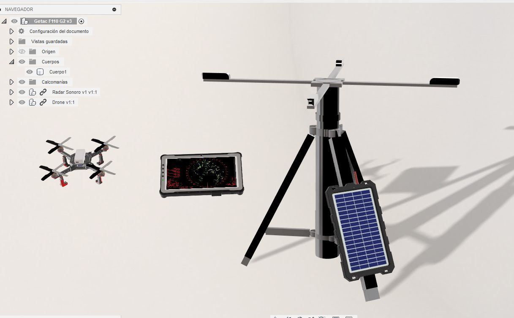
Plataforma de apuntado motorizada con visión embebida capaz de detectar, clasificar y seguir objetivos de forma autónoma sobre su campo de visión, con control de orientación en dos ejes y procesamiento a bordo en tiempo real.
- Detección y clasificación de objetivos mediante modelos de inferencia embebida optimizados por cuantización y poda de red para latencia mínima en hardware de campo
- Seguimiento robusto ante pérdida temporal, oclusión parcial y cambios de escala mediante predicción de trayectoria por modelo cinemático adaptativo
- Visual servoing en lazo cerrado: controlador PID con retroalimentación de error de centrado en imagen para orientación precisa en azimut y elevación
- Estimación de distancia y ángulo sólido al objetivo mediante calibración estéreo o modelos monoculares de profundidad relativa
- Lógica de priorización y selección de objetivo en escenas con múltiples detecciones simultáneas según criterios configurables
- Interfaz de supervisión con overlay de tracking, ángulos actuales, estado de objetivo y control manual de override en tiempo real
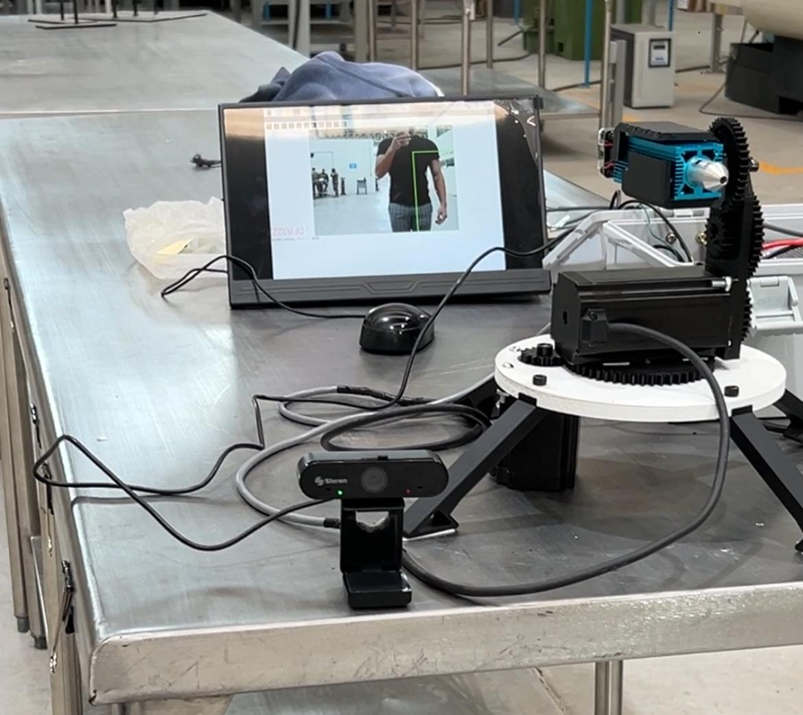
Sistema autónomo de mapeo y localización simultáneos (SLAM) que fusiona datos LiDAR con posicionamiento de alta precisión para generar nubes de puntos y mapas métricos detallados, completamente operativo sin conectividad ni infraestructura externa.
- SLAM 3D basado en LiDAR: registro iterativo de nubes de puntos con alineación ICP y optimización de pose en grafo de factores para coherencia global del mapa
- Fusión inercial-LiDAR-GPS mediante filtro de Kalman extendido o factor graph para corrección de deriva acumulada y georeferenciación métrica de alta precisión
- Operación completamente offline: todo el procesamiento ocurre en unidad embebida de campo sin dependencia de conectividad, nube o servidores remotos
- Generación de mapas de ocupación 2D y nubes de puntos 3D densas exportables en formatos estándar para integración con sistemas GIS
- Segmentación y clasificación de elementos del entorno sobre la nube de puntos: estructuras, obstáculos y cambios topográficos en tiempo real
- Detección de bucles de cierre (loop closure) para corrección de deriva acumulada en sesiones de mapeo prolongadas o de gran extensión
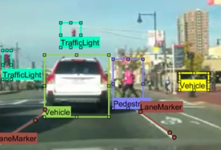
Alcances Propuestos
05 desarrollosConteo de personas, análisis de flujo peatonal, detección de aglomeraciones y comportamientos anómalos. Análisis de patrones sin almacenamiento de datos personales ni reconocimiento facial.
- Tracking multi-persona con identidades anónimas por sesión, sin vinculación biométrica de ningún tipo
- Análisis de trayectorias y generación de mapas de calor de densidad poblacional en tiempo real
- Detección de eventos anómalos: permanencia inusual, contraflujo y aglomeración súbita por desviación del modelo esperado
- Dashboard operativo con métricas en tiempo real e histórico para decisiones de seguridad y logística
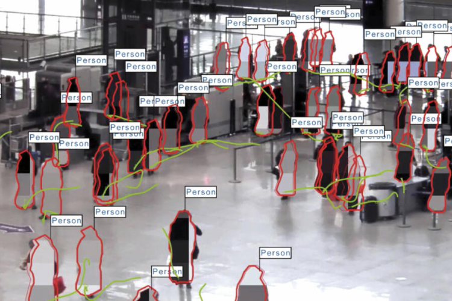
Visión artificial para identificar y clasificar materiales en banda transportadora o punto de acopio, integrable con actuadores de separación o señalización automática.
- Clasificación multi-material mediante CNNs con análisis combinado de textura, morfología y color espectral sobre banda
- Segmentación de instancias para separación de objetos traslapados con estimación de centroide para actuación
- Integración con señales de control para accionamiento de actuadores de desvío con latencia de respuesta mínima
- Estadísticas por categoría, volumen estimado y eficiencia operativa del proceso de separación
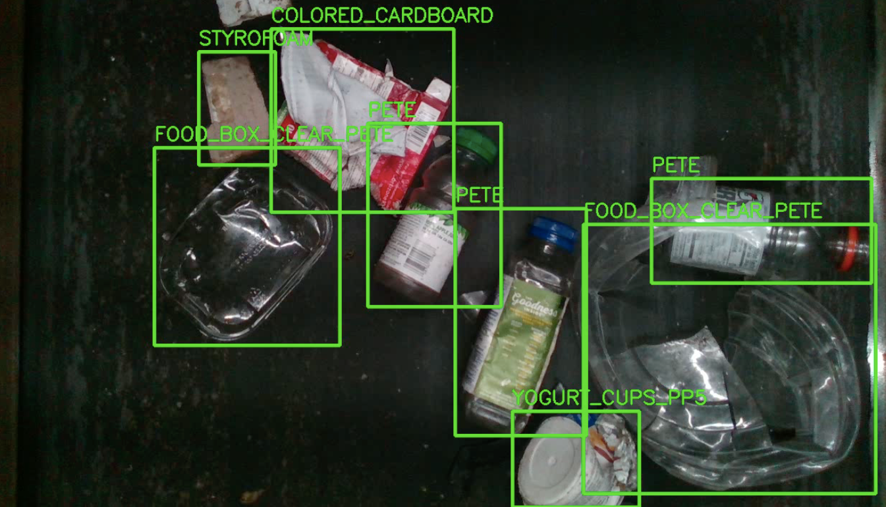
Detección en tiempo real de microsueño, distracción y niveles de fatiga mediante análisis facial no intrusivo, con alertas graduales y registro de eventos críticos.
- Seguimiento de landmarks faciales para cálculo de métricas fisiológicas: PERCLOS, frecuencia de parpadeo, velocidad de cierre palpebral y orientación cefálica
- Clasificación de estado cognitivo con modelos temporales (LSTM / Temporal CNN) que capturan la degradación progresiva de la atención
- Alertas graduales: aviso preventivo, alerta activa y protocolo de parada según nivel de riesgo detectado
- Operación robusta: iluminación nocturna, lentes, variaciones de postura y flujo de múltiples cámaras simultáneas
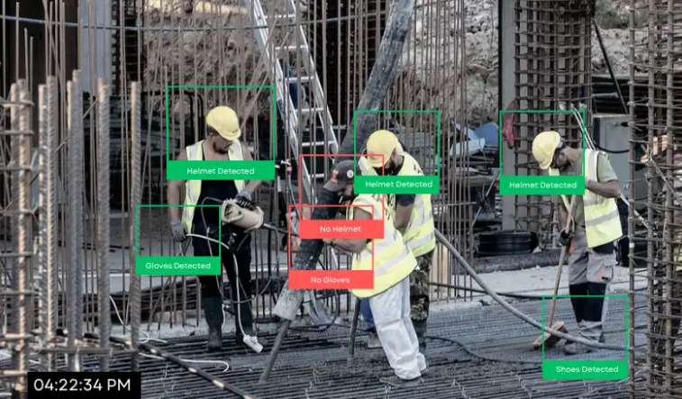
Reconocimiento y conteo automático de productos, materiales o activos mediante cámaras fijas o móviles, integrable con sistemas ERP o bases de datos del cliente.
- Detección y conteo de instancias con modelos fine-tuned sobre catálogo de productos del cliente mediante transfer learning
- Lectura automática de códigos, etiquetas y marcas de identificación para registro sin contacto físico
- Reconciliación automática entre inventario visual y registros digitales con alertas por discrepancia o faltante
- API de integración con sistemas ERP, WMS o bases de datos propietarias del cliente para actualización en tiempo real
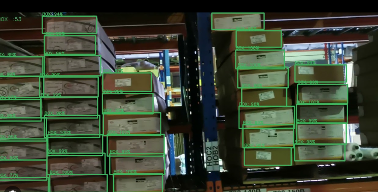
Integración de sensores visuales con modelos digitales de planta o instalación para monitoreo continuo del estado físico versus el estado esperado, con alertas automáticas por desviación.
- Fusión de datos de visión con modelos CAD/BIM para comparación continua estado real vs. modelo de referencia actualizado
- Detección de cambios por análisis diferencial temporal de escenas industriales con umbral adaptativo (change detection)
- Visualización 3D interactiva con marcado automático de zonas de desviación, falla o intervención requerida
- Integración con plataformas SCADA para gestión centralizada del estado de la planta en tiempo real
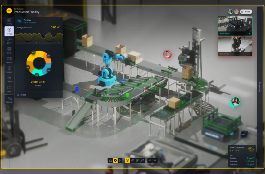
Modelo de Desarrollo
Análisis del problema, entorno operativo y restricciones del cliente.
Definición de arquitectura, hardware, algoritmos y alcance entregable.
Desarrollo de MVP funcional para validación en condiciones reales de campo.
Despliegue, ajuste fino y entrega del sistema completo operativo.
Acompañamiento post-entrega, actualizaciones y escalabilidad del sistema.
Contacto
¿Tienes un proyecto en mente?
Escríbenos o llámanos — respondemos a la brevedad.